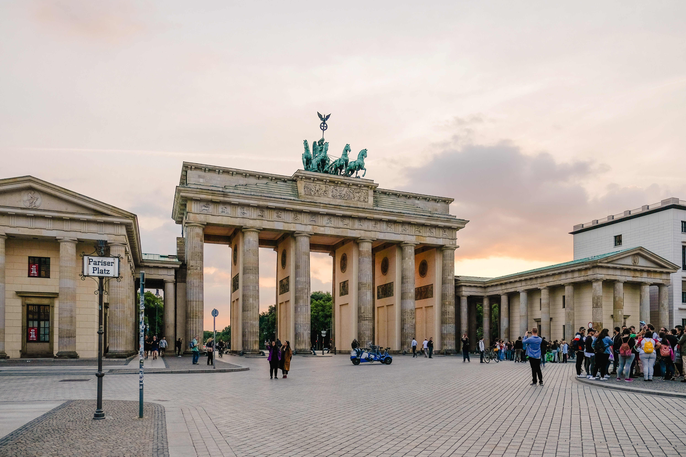
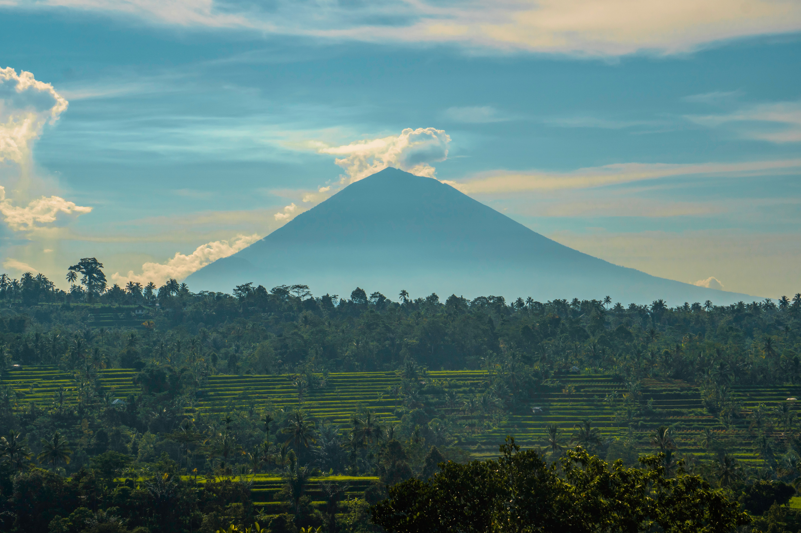
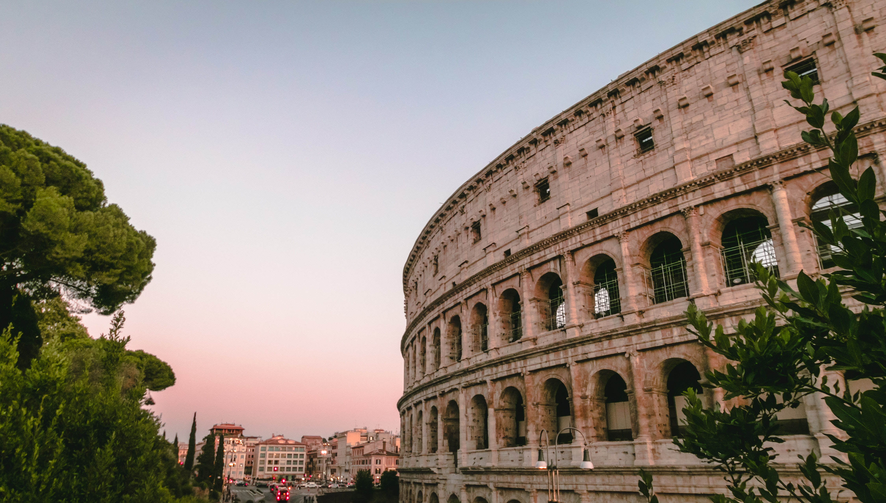
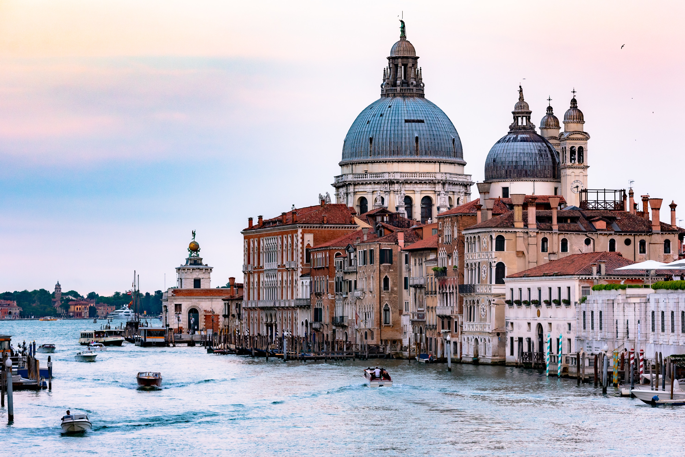

-

FLORENCIA
Ciudad italiana situada en la región de Toscana, de la que es su centro histórico, artístico, económico y administrativo.
-

BERLIN
Capital de Alemania y uno de los dieciséis estados federados alemanes. Se localiza al noreste de Alemania. Por la ciudad fluyen los ríos Esprea, Havel, Panke, Dahme y Wuhle.
-

BALI
Isla de Indonesia y un popular destino turístico conocido por sus delicadas artes, que incluyen danza, escultura, pintura, orfebrería, peletería y un particular estilo musical.
-

ROMA
Capital de Italia. Como capital del Imperio romano, se constituyó en la primera grande metrópolis de la humanidad, centro de una de las civilizaciones antiguas más importantes.
-

EL CAIRO
Capital de Egipto y la mayor ciudad del mundo árabe, de Oriente Próximo y de África. Además es la undécima urbe más poblada del mundo.
-

VENECIA
Ciudad está construida sobre un archipiélago de 118 pequeñas islas, casi todas ellas unidas entre sí por 455 puentes e incluye seis distritos en tierra firme donde vive la mayoría de la población.